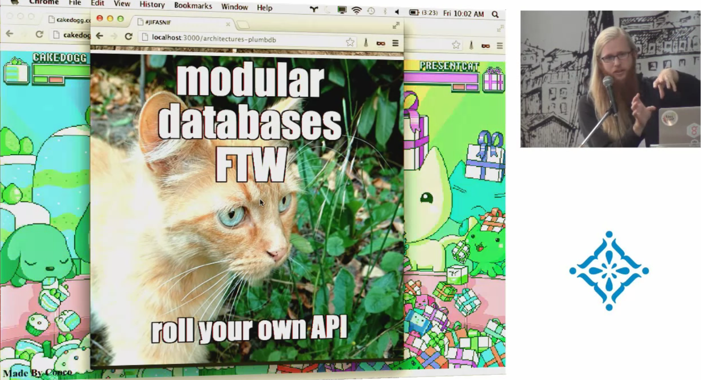
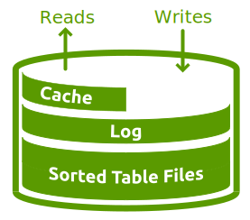

JavaScript Databases II

Max Ogden - "JavaScript Databases" - LXJS 2012
"I want to see a time where I can write a persistence function that can run in Node, the browser and anywhere else JavaScript runs."
So what is a Database?
A tool for interacting with structured data, externalised from the core of our application
- Persistence
- Performance
- Simplify access to complex data
Optional extras...
- Shared access
- Scalability
The Node Way™
Applied to databases?
Small core, vibrant user-land
Small core: LevelUP
Extreme modularity
Everything as a module
Everything in JavaScript!
Reimplementing database practice & theory
Inspired by LevelDB
- Open-source, embedded key/value store by Google
- Entries sorted by keys
- Basic operations:
Get(), Put(), Del() - Atomic
Batch() - Bi-directional iterators
LevelDB: basic architecture
Log Structured Merge Tree (LSM) 
- Writes go straight into a log
- Log is flushed string sorted table (SST) files
- SST files grow into a hierarchy of overlapping "levels"
- Reads merge the log and the level / SST data
- Cache speeds up common reads
LevelUP: Database primitives
... get, put, del, batch, readstream
LevelDOWN: Storage flexibility
... leveldb forks, lmdb, level.js
LevelUP: Building blocks
why batch?
readstream for queries
| Tools |
|
|||||||||||||||||
| Packages |
|
|||||||||||||||||
| Extensions |
|
|||||||||||||||||
| Extensibility |
|
|||||||||||||||||
| Core |
|
|||||||||||||||||
| Storage |
|
|||||||||||||||||